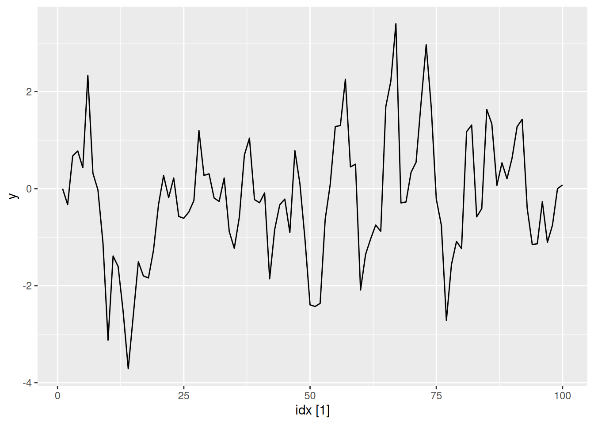
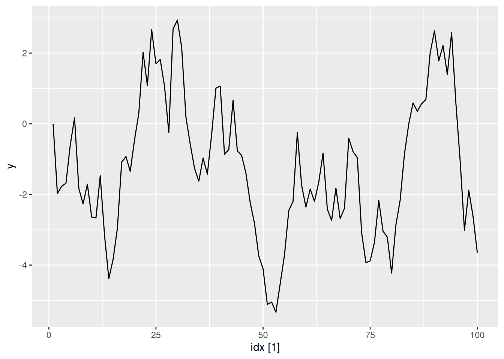
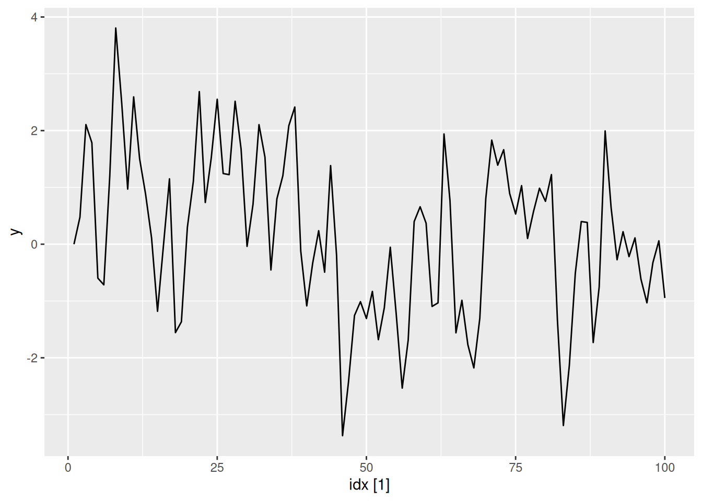
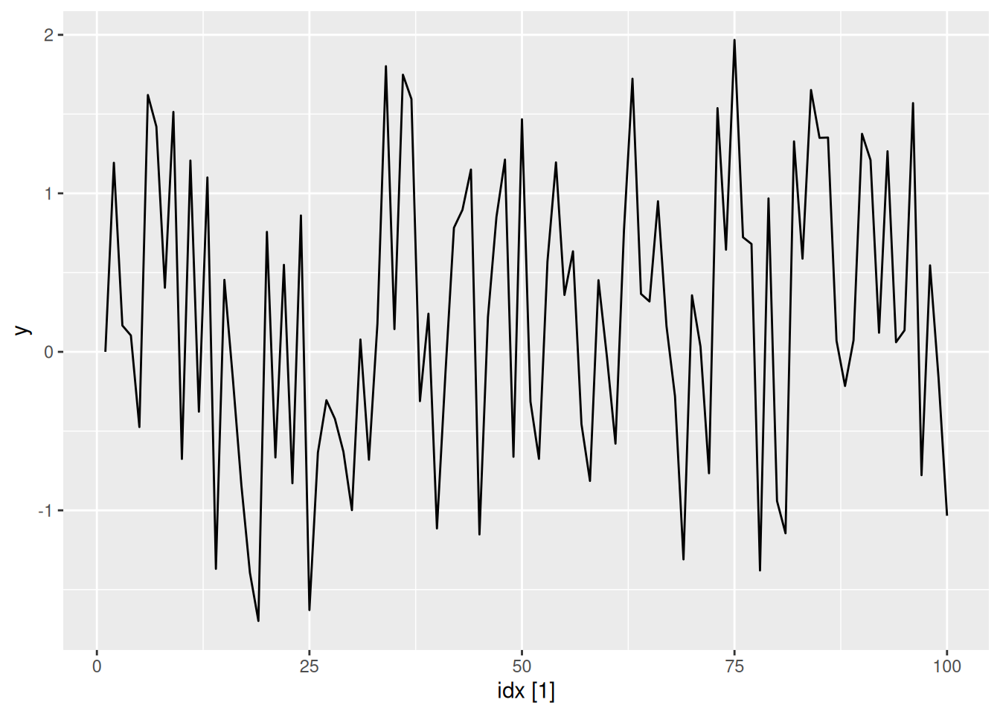
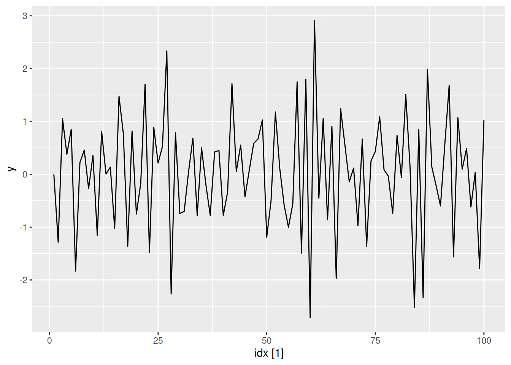
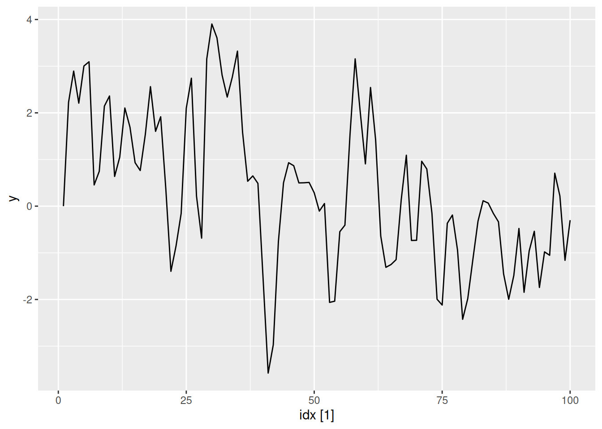
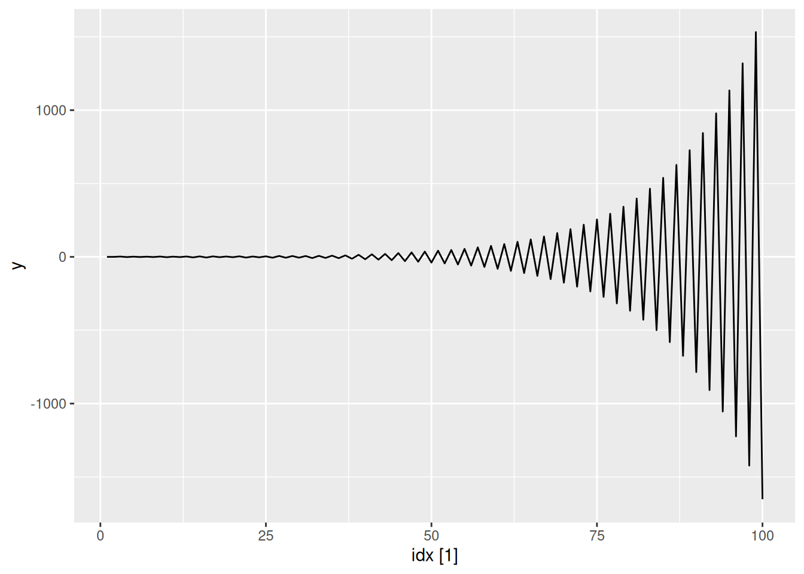

ar1 <- function(phi, n = 100L) {
y <- numeric(n)
e <- rnorm(n)
for (i in 2:n) {
y[i] <- phi * y[i - 1] + e[i]
}
tsibble(idx = seq_len(n), y = y, index = idx)
}Exercise Week 9: Solutions
library(fpp3)fpp3 9.11, Ex6
Simulate and plot some data from simple ARIMA models. a. Use the following R code to generate data from an AR(1) model with \phi_{1} = 0.6 and \sigma^2=1. The process starts with y_1=0.
- Produce a time plot for the series. How does the plot change as you change \phi_1?
Some examples of changing \phi_1
ar1(0.6) |> autoplot(y)
ar1(0.95) |> autoplot(y)
ar1(0.05) |> autoplot(y)ar1(-0.65) |> autoplot(y)
- Write your own code to generate data from an MA(1) model with \theta_{1} = 0.6 and \sigma^2=1.
ma1 <- function(theta, n = 100L) {
y <- numeric(n)
e <- rnorm(n)
for (i in 2:n) {
y[i] <- theta * e[i - 1] + e[i]
}
tsibble(idx = seq_len(n), y = y, index = idx)
}
- Produce a time plot for the series. How does the plot change as you change \theta_1?
ma1(0.6) |> autoplot(y)ma1(0.95) |> autoplot(y)
ma1(0.05) |> autoplot(y)
ma1(-0.65) |> autoplot(y)
- Generate data from an ARMA(1,1) model with \phi_{1} = 0.6, \theta_{1} = 0.6 and \sigma^2=1.
arma11 <- function(phi, theta, n = 100) {
y <- numeric(n)
e <- rnorm(n)
for (i in 2:n) {
y[i] <- phi * y[i - 1] + theta * e[i - 1] + e[i]
}
tsibble(idx = seq_len(n), y = y, index = idx)
}
arma11(0.6, 0.6) |> autoplot(y)
- Generate data from an AR(2) model with \phi_{1} =-0.8, \phi_{2} = 0.3 and \sigma^2=1. (Note that these parameters will give a non-stationary series.)
ar2 <- function(phi1, phi2, n = 100) {
y <- numeric(n)
e <- rnorm(n)
for (i in 3:n) {
y[i] <- phi1 * y[i - 1] + phi2 * y[i - 2] + e[i]
}
tsibble(idx = seq_len(n), y = y, index = idx)
}
ar2(-0.8, 0.3) |> autoplot(y)
- Graph the latter two series and compare them.
See graphs above. The non-stationarity of the AR(2) process has led to increasing oscillations
fpp3 9.11, Ex7
Consider
aus_airpassengers, the total number of passengers (in millions) from Australian air carriers for the period 1970-2011.
- Use
ARIMA()to find an appropriate ARIMA model. What model was selected. Check that the residuals look like white noise. Plot forecasts for the next 10 periods.
aus_airpassengers |> autoplot(Passengers)fit <- aus_airpassengers |>
model(arima = ARIMA(Passengers))
report(fit)Series: Passengers
Model: ARIMA(0,2,1)
Coefficients:
ma1
-0.8963
s.e. 0.0594
sigma^2 estimated as 4.308: log likelihood=-97.02
AIC=198.04 AICc=198.32 BIC=201.65fit |> gg_tsresiduals()fit |> forecast(h = 10) |> autoplot(aus_airpassengers)
- Write the model in terms of the backshift operator.
(1-B)^2y_t = (1+\theta B)\varepsilon_t where \varepsilon\sim\text{N}(0,\sigma^2), \theta = -0.90 and \sigma^2 = 4.31.
- Plot forecasts from an ARIMA(0,1,0) model with drift and compare these to part a.
aus_airpassengers |>
model(arima = ARIMA(Passengers ~ 1 + pdq(0,1,0))) |>
forecast(h = 10) |>
autoplot(aus_airpassengers)Both containing increasing trends, but the ARIMA(0,2,1) model has an implicit trend due to the double-differencing, while the ARIMA(0,1,0) with drift models the trend directly via the trend coefficient. The intervals are narrower when there are fewer differences.
- Plot forecasts from an ARIMA(2,1,2) model with drift and compare these to part b. Remove the constant and see what happens.
aus_airpassengers |>
model(arima = ARIMA(Passengers ~ 1 + pdq(2,1,2))) |>
forecast(h = 10) |>
autoplot(aus_airpassengers)aus_airpassengers |>
model(arima = ARIMA(Passengers ~ 0 + pdq(2,1,2)))# A mable: 1 x 1
arima
<model>
1 <NULL model>There is little difference between ARIMA(2,1,2) with drift and ARIMA(0,1,0) with drift. Removing the constant causes an error because the model cannot be estimated.
- Plot forecasts from an ARIMA(0,2,1) model with a constant. What happens?
aus_airpassengers |>
model(arima = ARIMA(Passengers ~ 1 + pdq(0,2,1))) |>
forecast(h = 10) |>
autoplot(aus_airpassengers)Warning: Model specification induces a quadratic or higher order polynomial trend.
This is generally discouraged, consider removing the constant or reducing the number of differences.The forecast trend is now quadratic, and there is a warning that this is generally a bad idea.
fpp3 9.11, Ex8
For the United States GDP series (from
global_economy):
- If necessary, find a suitable Box-Cox transformation for the data;
us_economy <- global_economy |>
filter(Code == "USA")
us_economy |>
autoplot(GDP)lambda <- us_economy |>
features(GDP, features = guerrero) |>
pull(lambda_guerrero)
lambda[1] 0.2819443us_economy |>
autoplot(box_cox(GDP, lambda))It seems that a Box-Cox transformation may be useful here.
- fit a suitable ARIMA model to the transformed data using
ARIMA();
fit <- us_economy |>
model(ARIMA(box_cox(GDP, lambda)))
report(fit)Series: GDP
Model: ARIMA(1,1,0) w/ drift
Transformation: box_cox(GDP, lambda)
Coefficients:
ar1 constant
0.4586 118.1822
s.e. 0.1198 9.5047
sigma^2 estimated as 5479: log likelihood=-325.32
AIC=656.65 AICc=657.1 BIC=662.78
- try some other plausible models by experimenting with the orders chosen;
fit <- us_economy |>
model(
arima010 = ARIMA(box_cox(GDP, lambda) ~ 1 + pdq(0, 1, 0)),
arima011 = ARIMA(box_cox(GDP, lambda) ~ 1 + pdq(0, 1, 1)),
arima012 = ARIMA(box_cox(GDP, lambda) ~ 1 + pdq(0, 1, 2)),
arima013 = ARIMA(box_cox(GDP, lambda) ~ 1 + pdq(0, 1, 3)),
arima110 = ARIMA(box_cox(GDP, lambda) ~ 1 + pdq(1, 1, 0)),
arima111 = ARIMA(box_cox(GDP, lambda) ~ 1 + pdq(1, 1, 1)),
arima112 = ARIMA(box_cox(GDP, lambda) ~ 1 + pdq(1, 1, 2)),
arima113 = ARIMA(box_cox(GDP, lambda) ~ 1 + pdq(1, 1, 3)),
arima210 = ARIMA(box_cox(GDP, lambda) ~ 1 + pdq(2, 1, 0)),
arima211 = ARIMA(box_cox(GDP, lambda) ~ 1 + pdq(2, 1, 1)),
arima212 = ARIMA(box_cox(GDP, lambda) ~ 1 + pdq(2, 1, 2)),
arima213 = ARIMA(box_cox(GDP, lambda) ~ 1 + pdq(2, 1, 3)),
arima310 = ARIMA(box_cox(GDP, lambda) ~ 1 + pdq(3, 1, 0)),
arima311 = ARIMA(box_cox(GDP, lambda) ~ 1 + pdq(3, 1, 1)),
arima312 = ARIMA(box_cox(GDP, lambda) ~ 1 + pdq(3, 1, 2)),
arima313 = ARIMA(box_cox(GDP, lambda) ~ 1 + pdq(3, 1, 3))
)
- choose what you think is the best model and check the residual diagnostics;
fit |>
glance() |>
arrange(AICc) |>
select(.model, AICc)# A tibble: 16 × 2
.model AICc
<chr> <dbl>
1 arima110 657.
2 arima011 659.
3 arima111 659.
4 arima210 659.
5 arima012 660.
6 arima112 661.
7 arima211 661.
8 arima310 662.
9 arima013 662.
10 arima312 663.
11 arima311 664.
12 arima113 664.
13 arima212 664.
14 arima313 665.
15 arima213 666.
16 arima010 668.The best according to the AICc values is the ARIMA(1,1,0) w/ drift model.
best_fit <- us_economy |>
model(ARIMA(box_cox(GDP, lambda) ~ 1 + pdq(1, 1, 0)))
best_fit |> report()Series: GDP
Model: ARIMA(1,1,0) w/ drift
Transformation: box_cox(GDP, lambda)
Coefficients:
ar1 constant
0.4586 118.1822
s.e. 0.1198 9.5047
sigma^2 estimated as 5479: log likelihood=-325.32
AIC=656.65 AICc=657.1 BIC=662.78best_fit |> gg_tsresiduals()augment(best_fit) |> features(.innov, ljung_box, dof = 1, lag = 10)# A tibble: 1 × 4
Country .model lb_stat lb_pvalue
<fct> <chr> <dbl> <dbl>
1 United States ARIMA(box_cox(GDP, lambda) ~ 1 + pdq(1, 1, 0)) 3.81 0.923The residuals pass the Ljung-Box test, but the histogram looks like negatively skewed.
- produce forecasts of your fitted model. Do the forecasts look reasonable?
best_fit |>
forecast(h = 10) |>
autoplot(us_economy)These look reasonable. Let’s compare a model with no transformation.
fit1 <- us_economy |> model(ARIMA(GDP))
fit1 |>
forecast(h = 10) |>
autoplot(us_economy)Notice the effect of the transformation on the forecasts. Increase the forecast horizon to see what happens. Notice also the width of the prediction intervals.
us_economy |>
model(
ARIMA(GDP),
ARIMA(box_cox(GDP, lambda))
) |>
forecast(h = 20) |>
autoplot(us_economy)
- compare the results with what you would obtain using
ETS()(with no transformation).
us_economy |>
model(ETS(GDP)) |>
forecast(h = 10) |>
autoplot(us_economy)The point forecasts are similar, however the ETS forecast intervals are much wider.
fpp3 9.11, Ex9
Consider
aus_arrivals, the quarterly number of international visitors to Australia from several countries for the period 1981 Q1 – 2012 Q3. a. Select one country and describe the time plot.
aus_arrivals |>
filter(Origin == "Japan") |>
autoplot(Arrivals)- There is an increasing trend to about 1996, and slowly decreasing thereafter.
- The seasonal shape has changed considerably over time.
- What can you learn from the ACF graph?
aus_arrivals |>
filter(Origin == "Japan") |>
ACF(Arrivals) |>
autoplot()- The slow decay of significant positive values is typical of trended series.
- The local increases at lags 4, 8, 12, … are typical of a series with quarterly seasonality.
- What can you learn from the PACF graph?
aus_arrivals |>
filter(Origin == "Japan") |>
PACF(Arrivals) |>
autoplot()- The spikes at lags 5, 9, 13 and 17 indicate quarterly seasonality (as they are 4 quarters apart).
- Produce plots of the double differenced data (1-B)(1 - B^{4})Y_{t}. What model do these graphs suggest?
aus_arrivals |>
filter(Origin == "Japan") |>
gg_tsdisplay(Arrivals |> difference(lag=4) |> difference(), plot_type = "partial")- The non-seasonal lags suggest an MA(1) component.
- The seasonal lags suggest a seasonal MA(1) component
- So the suggested model is an ARIMA(0,1,1)(0,1,1).
- Does
ARIMA()give the same model that you chose? If not, which model do you think is better?
aus_arrivals |>
filter(Origin == "Japan") |>
model(ARIMA(Arrivals))# A mable: 1 x 2
# Key: Origin [1]
Origin `ARIMA(Arrivals)`
<chr> <model>
1 Japan <ARIMA(0,1,1)(1,1,1)[4]>The resulting model has an additional seasonal AR(1) component compared to what I guessed. We can compare the two models based on the AICc statistic:
aus_arrivals |>
filter(Origin == "Japan") |>
model(
guess = ARIMA(Arrivals ~ pdq(0,1,1) + PDQ(0,1,1)),
auto = ARIMA(Arrivals)
) |>
glance()# A tibble: 2 × 9
Origin .model sigma2 log_lik AIC AICc BIC ar_roots ma_roots
<chr> <chr> <dbl> <dbl> <dbl> <dbl> <dbl> <list> <list>
1 Japan guess 177223035. -1332. 2670. 2670. 2678. <cpl [0]> <cpl [5]>
2 Japan auto 174801727. -1331. 2669. 2670. 2681. <cpl [4]> <cpl [5]>The automatic model is only slightly better than my guess based on the AICc statistic.
- Write the model in terms of the backshift operator, then without using the backshift operator.
(1-B)(1-B^4)(1-\Phi B^4)y_t = (1+\theta B)(1+\Theta B^4) \varepsilon_t \left[1-B - (1 + \Phi)B^4 + (1 + \Phi) B^5 + \Phi B^8 - \Phi B^9\right]y_t = (1+\theta B + \Theta B^4 + \theta\Theta B^5) \varepsilon_t y_t - y_{t-1} - (1 + \Phi)y_{t-4} + (1 + \Phi) y_{t-5} + \Phi y_{t-8} - \Phi y_{t-9} = \varepsilon_t + \theta \varepsilon_{t-1} + \Theta \varepsilon_{t-4} + \theta\Theta \varepsilon_{t-5}. y_t = y_{t-1} + (1 + \Phi)y_{t-4} - (1 + \Phi) y_{t-5} - \Phi y_{t-8} + \Phi y_{t-9} + \varepsilon_t + \theta \varepsilon_{t-1} + \Theta \varepsilon_{t-4} + \theta\Theta \varepsilon_{t-5}.
fpp3 9.11 Ex 10
Choose a series from
us_employment, the total employment in different industries in the United States.
- Produce an STL decomposition of the data and describe the trend and seasonality.
leisure <- us_employment |>
filter(Title == "Leisure and Hospitality")
leisure |>
autoplot(Employed)The sudden change in the seasonal pattern is probably due to some change in the definition of who is counted in this group. So our STL decomposition will need to have a small seasonal window to handle that. In addition, the variation changes a little as the level increases, so we will also use a square root transformation.
leisure |>
model(STL(sqrt(Employed) ~ season(window=7))) |>
components() |>
autoplot()With such a long series, it is not surprising to see the seasonality change a lot over time. The seasonal pattern changed in the 1990s to what is is now. The period of change was rapid, and the seasonal component hasn’t fully captured the change, leading to some seasonality ending up in the remainder series. The trend is increasing.
- Do the data need transforming? If so, find a suitable transformation.
Yes. A square root did ok – the remainder series is relatively homoscedastic. No transformation or log transformations led to the remainder series appearing to be heteroscedastic.
leisure |> features(Employed, guerrero)# A tibble: 1 × 2
Series_ID lambda_guerrero
<chr> <dbl>
1 CEU7000000001 -0.216The automatically selected transformation is close to logs. My preference is for something a little larger. I think the automatic procedure is confusing the changing seasonality with the increasing variance.
- Are the data stationary? If not, find an appropriate differencing which yields stationary data.
leisure |>
autoplot(sqrt(Employed) |> difference(lag=12) |> difference())The double differenced logged data is close to stationary, although the variance has decreased over time.
- Identify a couple of ARIMA models that might be useful in describing the time series. Which of your models is the best according to their AICc values?
leisure |>
gg_tsdisplay(sqrt(Employed) |> difference(lag=12) |> difference(), plot_type="partial")- This suggests that an ARIMA(2,1,0)(0,1,1) would be a good start.
- An alternative would be an ARIMA(0,1,2)(0,1,1).
fit <- leisure |>
model(
arima210011 = ARIMA(sqrt(Employed) ~ pdq(2,1,0) + PDQ(0,1,1)),
arima012011 = ARIMA(sqrt(Employed) ~ pdq(0,1,2) + PDQ(0,1,1))
)
glance(fit)# A tibble: 2 × 9
Series_ID .model sigma2 log_lik AIC AICc BIC ar_roots ma_roots
<chr> <chr> <dbl> <dbl> <dbl> <dbl> <dbl> <list> <list>
1 CEU7000000001 arima210011 0.0380 207. -406. -406. -386. <cpl [2]> <cpl>
2 CEU7000000001 arima012011 0.0381 206. -404. -404. -384. <cpl [0]> <cpl> The ARIMA(2,1,0)(0,1,1) model is better.
- Estimate the parameters of your best model and do diagnostic testing on the residuals. Do the residuals resemble white noise? If not, try to find another ARIMA model which fits better.
fit |>
select(arima210011) |>
gg_tsresiduals()The tails of the residual distribution are too long, and there is significant autocorrelation at lag 11, as well as some smaller significant spikes elsewhere.
fit <- leisure |>
model(
arima210011 = ARIMA(sqrt(Employed) ~ pdq(2,1,0) + PDQ(0,1,1)),
arima012011 = ARIMA(sqrt(Employed) ~ pdq(0,1,2) + PDQ(0,1,1)),
auto = ARIMA(sqrt(Employed))
)
glance(fit)# A tibble: 3 × 9
Series_ID .model sigma2 log_lik AIC AICc BIC ar_roots ma_roots
<chr> <chr> <dbl> <dbl> <dbl> <dbl> <dbl> <list> <list>
1 CEU7000000001 arima210011 0.0380 207. -406. -406. -386. <cpl [2]> <cpl>
2 CEU7000000001 arima012011 0.0381 206. -404. -404. -384. <cpl [0]> <cpl>
3 CEU7000000001 auto 0.0365 226. -440. -440. -411. <cpl [2]> <cpl> fit |> select(auto) |> report()Series: Employed
Model: ARIMA(2,1,2)(0,1,1)[12]
Transformation: sqrt(Employed)
Coefficients:
ar1 ar2 ma1 ma2 sma1
1.6261 -0.9132 -1.4773 0.7937 -0.5443
s.e. 0.0400 0.0309 0.0535 0.0352 0.0340
sigma^2 estimated as 0.03655: log likelihood=226.22
AIC=-440.44 AICc=-440.35 BIC=-411.26The automatically selected ARIMA(2,1,2)(0,1,1) model is better than either of my selections.
fit |>
select(auto) |>
gg_tsresiduals()
The residuals look better, although there is still a significant spike at lag 11.
- Forecast the next 3 years of data. Get the latest figures from https://fred.stlouisfed.org/categories/11 to check the accuracy of your forecasts.
fc <- fit |>
forecast(h = "3 years")
fc |>
filter(.model=="auto") |>
autoplot(us_employment |> filter(year(Month) > 2000))- Data downloaded from https://fred.stlouisfed.org/series/CEU7000000001
update <- readr::read_csv("CEU7000000001.csv") |>
mutate(
Month = yearmonth(DATE),
Employed = CEU7000000001
) |>
select(Month, Employed) |>
as_tsibble(index=Month) |>
filter(Month >= min(fc$Month))
fc |> accuracy(update)# A tibble: 3 × 10
.model .type ME RMSE MAE MPE MAPE MASE RMSSE ACF1
<chr> <chr> <dbl> <dbl> <dbl> <dbl> <dbl> <dbl> <dbl> <dbl>
1 arima012011 Test -3116. 4110. 3116. -27.2 27.2 NaN NaN 0.656
2 arima210011 Test -3114. 4109. 3114. -27.2 27.2 NaN NaN 0.656
3 auto Test -3141. 4131. 3141. -27.4 27.4 NaN NaN 0.656fc |>
filter(.model=="auto") |>
autoplot(us_employment |> filter(year(Month) > 2000)) +
geom_line(data=update, aes(x=Month, y=Employed), col='red')The initial forecasts look great, but then the pandemic led to a huge impact on the employment in this industry.
- Eventually, the prediction intervals are so wide that the forecasts are not particularly useful. How many years of forecasts do you think are sufficiently accurate to be usable?
Given the pandemic, about 5 months. Otherwise, perhaps 2–3 years.